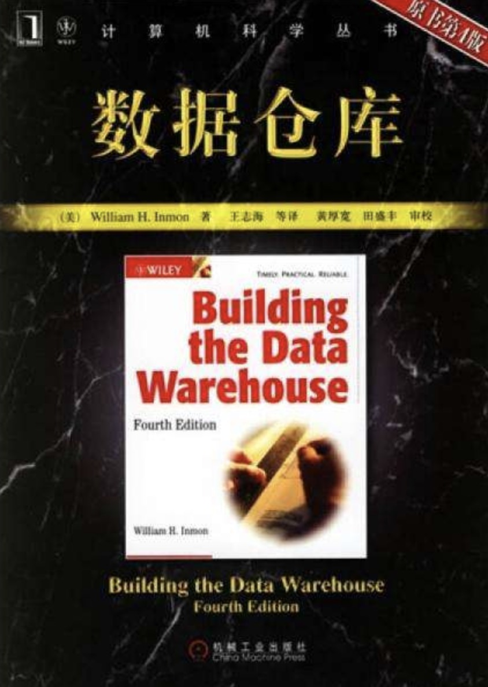
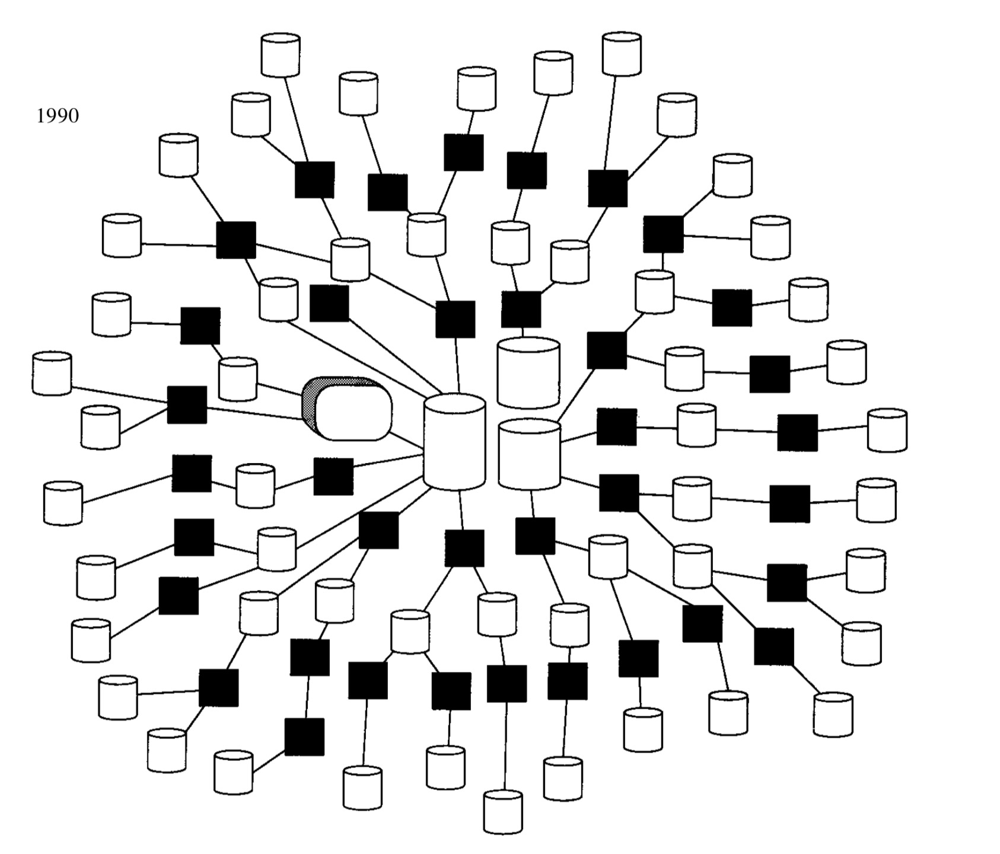
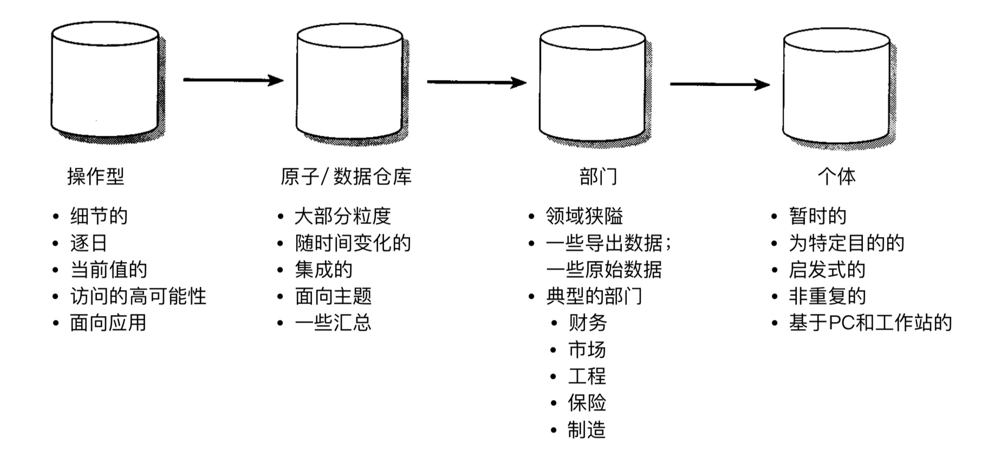

从入行开始就读这本书，每次重度都有新的体验。读书笔记，是一个我自己的理解与总结。
这本书已经写了快20年了，随着科技的发展，一些作者认为的难题，不再是难题，比如存储量，计算能力。但是书中对数据仓库的理解，建设方法，依旧是数据仓库从业者必须掌握的。书读百遍其义自见。
第一章 决策支持系统的发展
改变:随技术发生
随着科技的发展，数据存储从打孔的纸带到磁盘，并且随着个人计算机(PC)和第四代编程语言(4GL)的出现，人们可以直接控制数据和系统。一种新的思想体系开始出现，即一个单一的数据库既能用作操作型的高性能事务处理，同时又用作DSS(决策支持系统)分析处理。
抽取:为自己准备数据
大型联机高性能事务处理问世之后，如何在不影响已有系统的情况下使用数据呢，在这个时候，”抽取”程序诞生了。抽取是一个很简单的程序，搜索文件或者数据库，找到自己需要的数据，传到另外的文件/数据库中，变成”我自己”的数据。这样做的好处是，1. 不影响已有系统 2. 可以对我自己的数据进行进一步的处理，真正意义上的拥有了数据。
蛛网:公司里众多的”自己”
抽取并不只有一次，抽取来的数据，需要再次处理，然后再次处理。一份数据不仅仅我在用，其他人也在用，导致后来数据的流转越来越复杂(如下图)

带来的问题
每个人都为了自己抽取，结果导致如下问题。
- 数据不可信。
数据分别抽取计算，必然会导致结果有差异，两个部门得到的结论甚至大相径庭，决策者无法确定哪一份数据更可靠，也无法用数据进行决策。
带来数据不可信的原因:- 数据源:是否用公司内不同系统产生的数据，是否用到外部数据。
- 计算方法:抽取层级是否相同，计算算法是否相同。
- 数据周期:计算周期是否相同。同一数据源抽取时间是否相同(周一和周二抽取同一份数据库，会得到不同的数据)
- 效率低。
每个人都要写自己的抽取程序，不同人的需求很可能相同。导致开发重复，计算重复。 - 数据无法转化为信息。
每个团队只关注计算自己这里的数据，不系统全面的数据，无法对公司给出好的建议。统一:势在必行
基于种种问题，对数据进行统一的处理势在必行，一般遵守如下流程。

对比蛛网来说，这种虽然有冗余数据，但是少的多。并且逻辑归一，有更高的可用性。生命周期
理论上来说，数据都有生命周期，比如金钱相关的永久保存，一些过期的行为数据会降维存储。但是现在存储介质越来越廉价，所以也不再提生命周期的事了，全存！监控:数据质量
建设数据仓库之后要对其进行监控，比别人更快一步知道数据问题是数据仓库从业者的基础能力。通过监控，可以获得如下信息。
- 数据基本情况。表的基本信息，增长信息，流转信息。
- 数据波动。
- 什么用户在什么时间使用什么数据。
- 估算数据就绪的时间。
数据仓库不能无止境的添加，需要根据监控的结果，对无人关注的内容进行删除。小总结
数据流程，数据监控。
第二章 数据仓库环境
数据仓库是体系结构设计环境的核心，是决策支持系统(DSS)处理的基础。
数据仓库是一个面向主题的、集成的、非易失的且随时间变化的数据集合，用来支持管理人员的决策。
面向主题
数据仓库是面向在数据模型中已定义好的公司的主要主题领域的。不同产品形态的主题大体上是相似的，都包含人/物/行为这些，但是也会有所不同。比如在网约车中，主要是司机/乘客/订单三个主题，在feed流中，主要是读者/作者/咨询。
主题的表现形式是一些可以由公共唯一键关联起来的表组成。
集成
由于数据是由多个系统产生的，在没有统一规范之前，每个系统的开发人员有自己的规范，相同的信息会用多种不同的方式来表达，比如性别，有的系统用0/1，有的用f/m，有的用x/y，在数据仓库这里就必须要统一起来，供后续使用。(一般在etl时就处理)
同时，我理解另外有一种行为也可以称之为数据集成：一系列连续的行为从分散到集成到一起。比如网购，从下单/付费/收获/评价。这些行为可由订单id这个唯一key关联起来，整合到一起。主要注意的是行为的延后性，比如下单/付费是同一天，收获/评价是同一天，但是这四个行为很可能不是一天，需要考虑这种情况下的数据建设。
迭代
数据仓库是为产品服务的，从来不是一蹴而就的事情，是随着产品的丰富，需求的增多而逐步完善的。
粒度
现在的存储资源充足，不用考虑生命周期的事情，但是适当降低粒度，会让数据使用起来更容易。比如在计算用户活跃/留存数据时，可以用访问明细数据进行计算，但是使用用户的天/历史累计数据，会更清晰以及节省资源。
数据仓库-标准手册
数据仓库建设之后，对外提供使用，不仅仅是给几个表名，表结构，而是要对数据仓库进行整体的描述。
数据仓库白皮书包含以下内容:
- 什么是数据仓库。
- 数据源包含哪些。
- 数据处理流程。
- 数据仓库包含了什么。
- 怎么使用数据仓库。
- 问题的自查方法以及负责人。
第三章 设计数据仓库
建造数据仓库主要有两个方面:数据接入处理，以及数据仓库本身的设计。
其实叫”设计”并不是非常准确，因为是需要先获得部分数据，根据用户反馈，再在数据仓库中添加内容。这种”迭代”是贯穿在数据仓库使用中的，没有任何方法可以预先设计好整个数据仓库而后面不用修改。
从操作数据开始
数据接入以及清洗。
元数据
元数据，是描述数据的数据，有了元数据，才能更好的使用数据仓库。
元数据再数据仓库的上层，包含的内容有:
- 数据结构
- 数据源
- 数据处理逻辑
- 数据模型
- 数据生效时间
- 仓库表信息
- 数据的描述信息，盒图